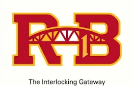

Preparation for advanced study and research careers.
Hands-on experience and transferable professional skills.
Problem-solving, analysis, and independent learning.
Learning alongside faculty and exploring research interests.
A centralized student–faculty research matching platform designed around Iowa State's undergraduate research ecosystem and EUReCA — bringing discovery, profiles, matching, transparent recommendations, skill guidance, and outreach into one experience.
Find relevant research opportunities and understand requirements.
Connect student interests and capabilities with faculty project needs.
Understand skill gaps and take meaningful next steps toward research.
An intelligent, transparent, and connected research experience.
One place for student profiles, faculty research projects, relevant skills, interests, and requirements.
AI-assisted or preference-based matching across student interests, academic background, skills, and faculty project requirements.
Transparent recommendations that help users understand why a student and research project may be compatible.
Personalized guidance showing which skills or knowledge areas students could develop for particular opportunities.
Contextual draft emails and clearer communication between students and faculty.
Structured matching sessions, student and faculty preferences, and more organized placement workflows.
A sophomore in Computer Science who wants to get involved in undergraduate research — but is unsure which professors have opportunities and which projects match his interests and skills.
Background, skills, interests, experience.
Discover available faculty projects.
Identify compatible opportunities.
Review match explanations & guidance.
Continue toward outreach or placement.
Built with AWS Kiro. Powered by structured research matching workflows.
Organized student, faculty, project, and preference information.
Compatibility across interests, skills, requirements, and preferences.
Role-based access and responsible handling of student data.
Architecture that can evolve across projects, departments, and cycles.
A maintainable, expandable platform for possible institutional adoption.
From individual research matches to a connected campus-wide research ecosystem.
Pilot with an undergraduate research program or EUReCA cohort. Gather feedback and evaluate match quality.
Faculty review tools, notifications, interview coordination, feedback loops, and placement processes.
Matching algorithms, explainable recommendations, skill-gap roadmaps, and fairness evaluation.
Explore campus authentication, approved integrations, privacy requirements, operating costs, and department adoption.
| → Space | Next slide |
| ← Backspace | Previous slide |
| F | Toggle fullscreen |
| Home / End | First / last slide |
| 1–8 | Jump to slide |
| Dots / swipe | Navigate on touch |
On Slide 5, the Live Demonstration button opens the Research Bridge app in a new tab. Switch back to this tab (Alt+Tab) to continue the deck.